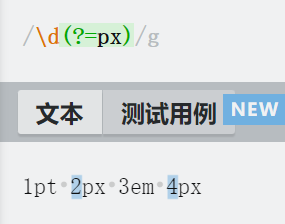
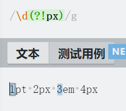
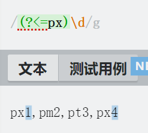
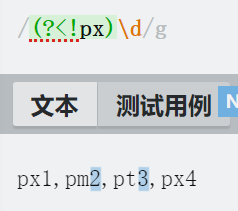

正则表达式快速入门
正则表达式，又称规则表达式。（英语：Regular Expression，在代码中常简写为regex、regexp或RE），计算机科学的一个概念。正则表达式通常被用来检索、替换那些符合某个模式(规则)的文本。
许多程序设计语言都支持利用正则表达式进行字符串操作。例如，在Perl中就内建了一个功能强大的正则表达式引擎。正则表达式这个概念最初是由Unix中的工具软件（例如sed和grep）普及开的。正则表达式通常缩写成“regex”，单数有regexp、regex，复数有regexps、regexes、regexen。
这里就从浅入深一步一个脚印开始探索正则表达式
限定符
限定符是指限定一个字符，通过限定符可以匹配字符出现的数量，这里列举出限定符
?- 指出现0次或者一次
- 列举：
ad?意思为d出现0次或者1次，可有可无
*- 匹配出现0个或【多】个字符
- 列举：
ad*c意思为b可以没有，也可以出现多次
+- 匹配出现1次以上的字符
{}- 匹配出现字符次数
- 列举：
ad{2}c意思为出现2次b；ab{2,6}c意思为出现2到6次b；ab{2,}c意思为出现2次以上b
“或”运算器
a (cat|dog) 匹配：a cat,a dog。|表示或
字符类
[a-z]- 匹配所有小写英语字符
[a-zA-Z]- 匹配所有英语字符
[a-zA-Z0-9]- 匹配所有英语字符和数字
^- 匹配除
^以后的字符 - 列举：
\[^0-9]匹配所有的非数字字符（包括换行符）
- 匹配除
元字符
\d代表数字字符\w代表单词字符（英文，数字以及下划线）\s代表空白符（包括Tab和换行符）\D代表非数字字符\W代表非单词字符\S代表非空白符\b代表单词的开始或结束^代表行首$代表行尾.任意字符（不包含Tab）
贪婪与懒惰匹配
<.+>匹配<后>前尽可能多的字符，为贪婪匹配<.+?>加上？后将贪婪匹配转换为懒惰匹配
先、后行断言
这里先引入笔者一个叫”丢弃匹配”的概念。
丢弃匹配，指的是匹配到了，但是会被丢弃，不被引用。比如说匹配1pt，当只需要1时，pt就是被丢弃的部分，但是也需要被匹配到，所以pt就是丢弃匹配字符串
先行断言，指的是匹配字符串在前，丢弃匹配字符串在后的匹配方法。比如说匹配1px，当只需要1时，px作为丢弃匹配字符串在1的后面。先行断言匹配有两种形式：
- 正向先行断言：匹配对应丢弃匹配字符串的部分，匹配表达式为：
(?=)，例子：\d(?=px)

- 负向先行断言：匹配对应丢弃匹配字符串以外的部分，匹配表达式为：
(?!)，例子：\d(?!px)

后行断言，指的是匹配字符串在后，丢弃匹配字符串在前的匹配方法。比如说匹配px1，当只需要1时，px作为丢弃匹配字符串在1的前面。后行断言匹配有两种形式
- 正向后行断言：匹配对应丢弃匹配字符串的部分，匹配表达式为：
(?<=)，例子：(?<=px)\d

- 负向后行断言：匹配对应丢弃匹配字符串以外的部分，匹配表达式为：
(?<!)，例子：(?<!px)\d

本博客所有文章除特别声明外，均采用 CC BY-SA 4.0 协议 ，转载请注明出处！